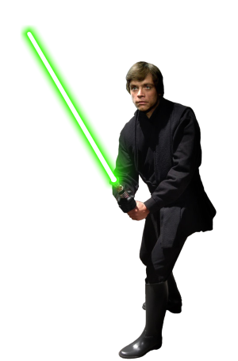

Luke Skywalker fue un granjero de Tatooine que, desde sus humildes orígenes, se convirtió en uno de los Jedi más grandes que la galaxia haya conocido. El Elejido, Luke se convirtió en aprendiz del antiguo maestro de su padre, Obi-Wan Kenobi, con el fin de aprender los caminos de la Fuerza y convertirse en un Jedi, sin saber que ese era elcomienzo del fin del imperio